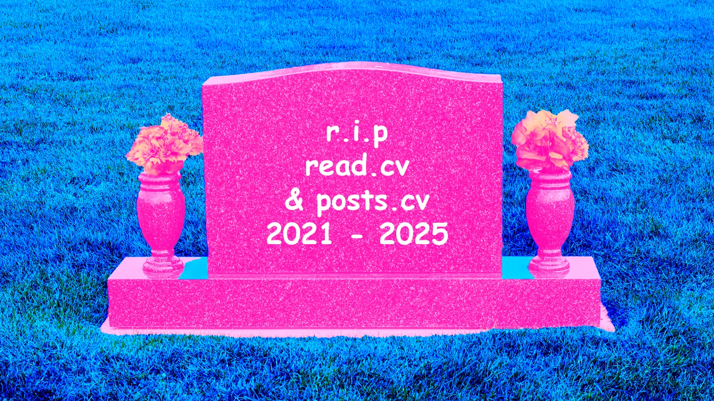
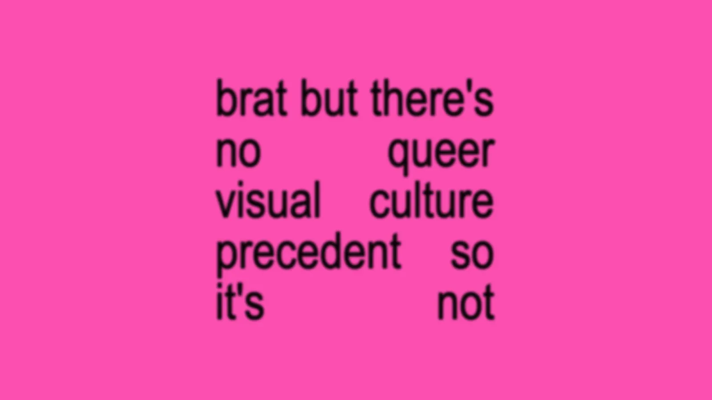
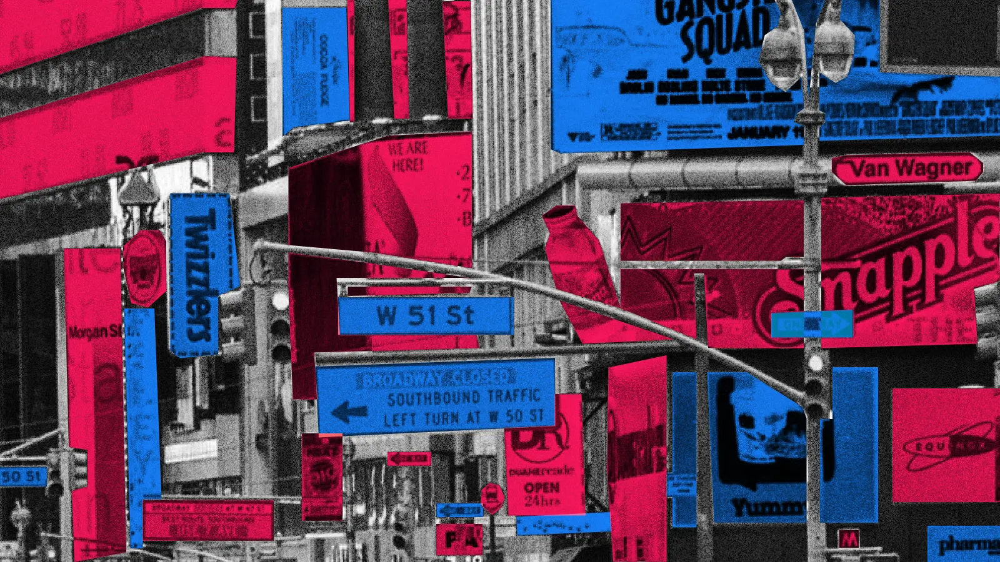

Blog
Planted: Mar 24, 2026. Last tended:

So read.cv and post.cv are being winded down. Which is corporate-speak for the sudden death of a beloved space. Excuse my hyperbole, but understand: I’m in my {denial} stage of grief.
16 feb, 2025
→

I don't think so hun.
26 jul, 2024
→

How many CTAs are too many CTAs? A quick guide to effectively design them and use the right amount to boost conversions without overwhelming users.
23 may, 2024
→
I just arrived from my local arthouse cinema and I couldn’t keep myself from connecting the movie I experienced to a fundamental design habit. Let me elucidate why.
24 aug, 2023
→
AI used to feel like a summer shadow that looms ever larger but never engulfs you in it because it simply cannot. Because it’s slow; because you’re faster. We, designers, used to feel safe about it because of how utopian everything about it seemed. But guess what?
2 aug, 2023
→